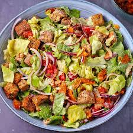

Description
A healthier take on a tradition caesar salad
Ingredients
- A head of Cos lettuce
- A bunch of Kale
- A handful of walnuts
- 200g chicken thighs
- Cheese of your choosing (cheddar, parmasan, reggiano work best)
- Cajun seasoning
- Cherry tomatoes
- Red onion
- Caesar dressing
- Butter
- Pepper
Method
- Rub chicken with Cajun seasoning, (get it in all nice and deep like)
- Add 50g butter to pan and place on medium heat
- Add chicken to pan, place another little bit of butter on top
- Cut up all veggies to desired size and place in a large bowl (You can rip the kale and lettuce)
- Cut walnuts into small pieces and place in the bowl
- When chicken is nearly finished cookin', place onto chopping board, cut to smaller pieces and place back in pan
- Move chicken around the pan to soak up all the butter and Cajun good good
- Switch stove off once chicken is cooked
- Place chicken into salad
- Grate cheese of choice over hot chicken
- Lather with caesar dressing
- Crack some pepper onto salad
- Munch like you have never munched before
Recipes Home Page
Return to Top